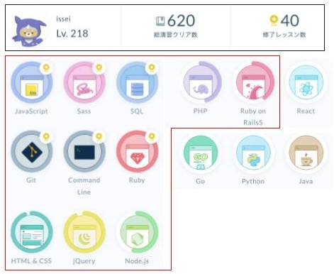

Self promotion
自己PR
課題解決力
業務課題を観察・分解し、データに基づく仮説検証で最適解を導き出すことを心がけています。
工程改善を通じてリードタイム短縮や品質安定化を実現してきました。
-
焼成工程の生産性向上
スリット入り焼成台板の導入により約500万円/年の経費削減
-
磁器加工手順の最適化
データ分析と仮説検証で磁器反りの安定化
-
端子ロウ付け技術の仕様化
文献や試験を元にロウ付け技術を部署内で仕様化し、様々な開発品に展開
他者との連携力
相手の事情を理解し、背景や効果を共有することで信頼を築き、協働を円滑に進めてきました。
製造部門や外注業者と協力し、試作流動をスムーズに進める体制を構築しました。
-
工程流動の推進
製造と密に調整し、試作を滞りなく出荷
-
交渉と調整
相手の業務事情を理解したうえで開発品の背景や費用帯効果を伝え、互いに納得できる形で優先対応を実現
-
先読み行動
次工程を見据えて製造現場へ事前伝達
Webエンジニアになるための取り組み
Progate学習
独学で基礎固め
Progateというオンラインプログラミング学習サービスを活用し、HTML、CSS、JavaScript、jQuery、PHP、Ruby、 Ruby on Rails、SQL、Sass、Git、Command Line、Node.jsなど幅広い言語やツールに触れました。 総演習クリア数は620に達し、Web言語やツールの基礎を幅広く学びました。
デイトラ学習


実践的なスキル習得
デイトラWeb開発コースを通じ、初級編ではHTML/CSSやJavaScriptでの動的ページ制作を習得しました。
中級編ではRuby on RailsとSQLを学び、認証やCRUD機能を備えたWebアプリを開発・デプロイまで実践しました。
開発実績：Board Todo App
Board Todo Appは、タスク管理をより視覚的・柔軟に行えるように設計したToDoアプリです。
チームや個人での課題管理において「誰がどのタスクを担当しているのか分かりづらい」
という課題を解決するため、ボード単位でタスクを整理できる仕組みを導入しました。
主な機能
- ユーザー認証（Devise）
- Board / Task の1対多リレーション
- CRUD機能（作成・編集・削除）
- バリデーション
- ページネーション
- ログインユーザーごとのデータ分離
技術スタック
- Ruby on Rails
- PostgreSQL
- Devise
- Bootstrap
- Heroku
- Git / GitHub
工夫したポイント
- カードUIで直感的に操作可能
- レスポンシブ対応
- データの整合性を考慮した設計
開発実績：CookTube
CookTubeは、YouTube 上の料理ショート動画を 保存・分類・再利用しやすくすることを目的に開発した Web アプリです。
「後で見返したい料理動画が埋もれてしまう」「フォルダ分けして管理したい」という課題を解決するため、
動画をカード形式で一覧表示し、フォルダ単位で整理できる仕組みを実装しました。
主な機能
- ユーザー認証（Devise）
- YouTube 動画検索機能（API連携）
- 動画の保存・削除機能
- フォルダ作成・編集・削除
- 動画のフォルダ振り分け（複数フォルダ対応）
- 未分類動画一覧表示
- ページネーション
- 動画とフォルダの連携（フォルダ名のタグ付け）
- 背景イラストのランダム表示演出
- ログインユーザーごとのデータ分離
技術スタック
- Ruby on Rails
- PostgreSQL
- Devise
- HTML/CSS
- JavaScript
- API連携(YouTube Data API v3)
- Heroku
- Git / GitHub
工夫したポイント
- 動画カードを共通partialとして設計し、検索結果やフォルダ内の動画などカードUIを統一
- フォルダ × 動画の多対多設計（複数フォルダ対応）
- 動画が「どのフォルダに入っているか」一目で分かるタグ表示
- レスポンシブを意識したグリッド設計（PC：3列表示、スマホ：1列表示）
- 背景イラストによる体験的な演出（料理イラストのランダム表示、スマホでは非表示）
閲覧用ユーザー
- メールアドレス：test@gmail.com
- パスワード：password